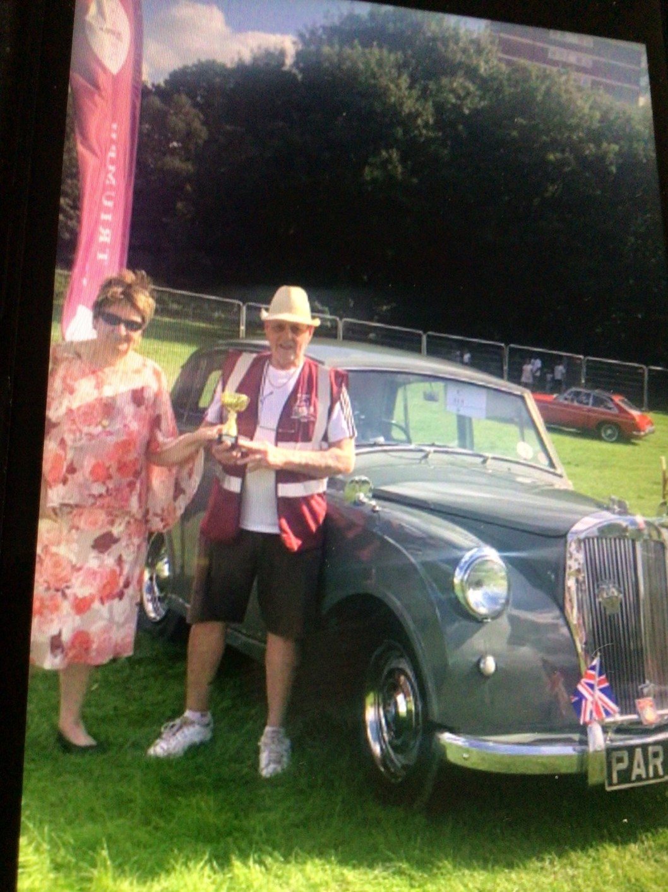

<link href="{{ site.baseurl }}/events/article.css" rel="stylesheet" type="text/css">
<main>
    <article>
        <ol id="breadcrumb">
            <li>
                <a href="{{ site.baseurl }}/">Home</a>
            </li>
            <li>
                <a href="{{ site.baseurl }}/events">Events</a>
            </li>
            <li>
                <a href="{{ site.baseurl }}/events/local">Local</a>
            </li>
            <li>Havering Mind Classic Car Show 2021</li>
        </ol>
        <div id="content">
            <h1>Havering Mind Classic Car Show, Essex</h1>
            <h2>15<sup>th</sup> August 2021</h2>
            <h3>Report by Mick Hales</h3>
            <p>Mick Hales (member 1266) at the Havering Mind Classic Car Show in Essex, on August 15<sup>th</sup> 2021 with his Mayflower “Molly” (PAR 752). Molly took the “best classic” out of about 200 classic cars, but Mick says <em>“we were the only Mayflower”</em>.</p>
            
            
        </div>
    </article>
    <aside>
        <h2>Members’ cars in attendance</h2>
        <ul class="disableListStyles">
            <li>
                <h3>Mick Hales</h3>
                <div>
                    <div class="numberPlateMarker">PAR 752</div>
                </div>
            </li>
        </ul>
    </aside>
</main>
